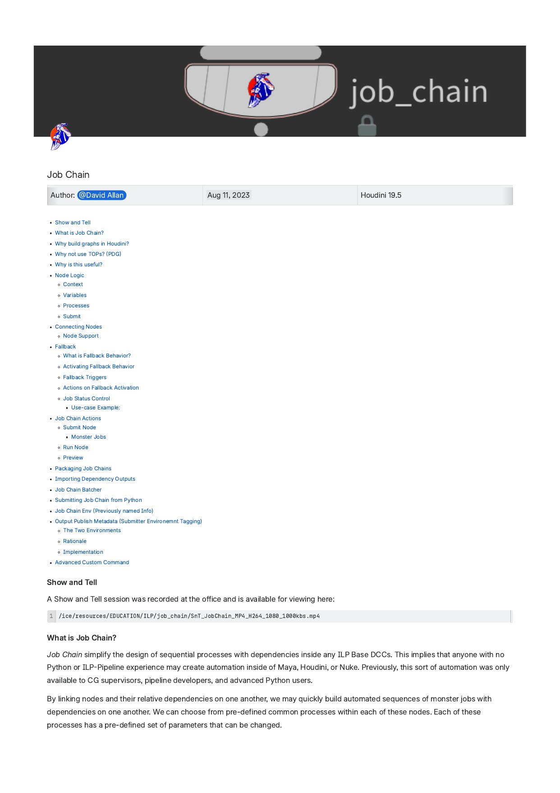
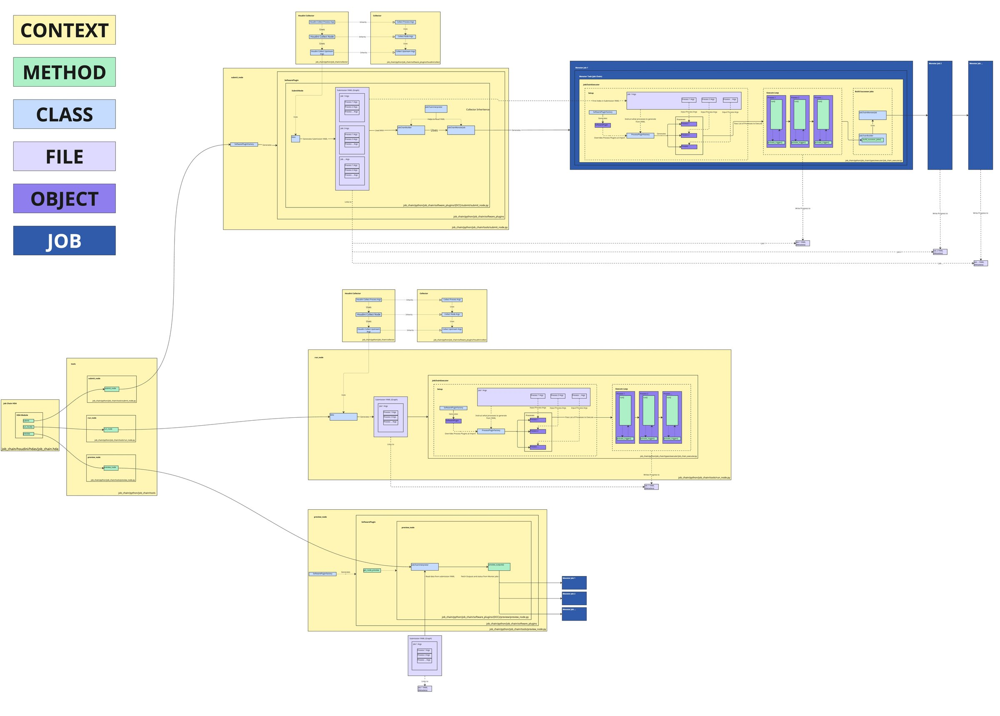
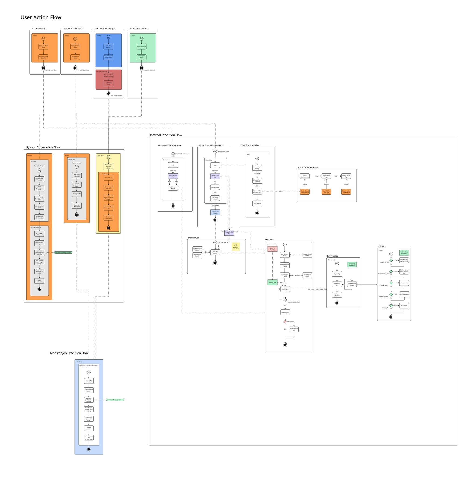

What it does
Overview
Job Chain lives inside Houdini as a ROP network. Each node is a step — open a workfile, run a sim, import a publish, submit an output to the render farm. Wire them together and the chain executes in order, with each step waiting for its dependency to complete before starting. No Python required to build or run a chain.
Artists and supervisors build preset chains for common workflows or go fully custom per show. Chains can be submitted directly from Houdini, triggered from a ShotGrid right-click, or called from Python by other tools. On Ronja, a single ShotGrid action delivered a fully groomed, simulated, and lit character render — no TD involvement.
Build workflows visually by wiring nodes. No Python required. Each node is a step; connections define dependencies.
Steps don't proceed until upstream dependencies are confirmed complete. A light job won't start until anim finishes.
Every chain runs against a ShotGrid entity. Version resolution, publish paths, and file locations are automatic — no manual path entry.
Nodes define conditional fallbacks: if no workfile is found, display a message and stop. If no input updates exist, skip the sim and continue.

System overview — node graph, submission flow, and dependency model
Modular design
Three DCC plugins
Job Chain is built around a software plugin system. The graph definition is DCC-agnostic — the same YAML chain runs identically whether it's executing inside Houdini, Maya, or Blender. Each plugin handles the DCC-specific bootstrapping, file operations, and parameter access, while the core job logic stays unchanged.
Primary authoring environment. Chains live as ROP networks inside Houdini. Supports all process types including OutputNode (SubmitToMonster ROP) and HDA packaging for distribution.
Full plugin parity for character and rigging pipelines. HandleParameters adapts to Maya's attribute system. Chains submitted from Houdini execute inside Maya sessions transparently.
Enables the same workflow automation for Blender-based pipelines. Same chain graph, DCC-specific plugin handles environment setup and file I/O.
Built-in processes
What a node can do
Each node in a chain executes one or more processes in sequence. These are the built-in process types — all configurable via parameters, no code needed:
| Process | What it does |
|---|---|
| Open | Opens a workfile from a specified context. Can optionally migrate from a template if no existing file is found. |
| Save | Saves the scene to a specific context path — version-controlled and publish-path-aware. |
| Output | Submits render or cache outputs to the render farm (Monster). Creates farm jobs for downstream steps. |
| Handle Parameters | Sets parameters or triggers buttons in the workfile — overrides values per-shot without touching the file manually. |
| Import Publish | Imports a published asset or cache into the current workfile, resolving the correct version automatically. |
| Apply Context Settings | Sets scene properties — FPS, frame range, resolution — from the ShotGrid context. No manual entry. |
| Scene Breakdown | Updates all inputs in the workfile to their latest published versions. Triggers fallback if nothing has changed. |
| Run Code | Executes arbitrary Python inside the workfile session. For cases where no built-in process covers the requirement. |
| Daily | Publishes a daily review version to ShotGrid. |
| Merge Workfile | Merges another workfile's contents into the current session — used for combining assets across departments. |
Architecture
System design
Layered abstractions: Context → Method → Class → File/Object → Job. A single graph adapts to any DCC and can be overridden at any layer without rewriting shared logic.
JobChainInterpreter reads and parses the submission YAML, extracting all process definitions and context information. JobChainExecutor runs a single node — delegating to a ProcessPlugin (what runs) and a SoftwarePlugin (DCC-specific context). JobChainBuilder assembles the full farm monster job when submitting. All configurable at the YAML level, no code changes needed per show.

Full system architecture — Context / Method / Class / File / Object / Job layer hierarchy
Execution flow
Three ways to run a chain
Press Submit on the Job Chain node — dispatches to the render farm. All downstream nodes execute as a sequenced monster job.
Press Run — executes processes locally in the current session. Immediate and synchronous, good for iteration and debugging.
Right-click a version → Submit Job Chain. Standard path for artists. No Houdini needed. Finds the relevant chain under the template entity automatically.
from job_chain import job_chain — used by other TD tools that call Job Chain as a backend API, enabling fully automated pipelines with no artist interaction at all.

Execution flow — three submission paths mapping to the same underlying system
What it powered
In production
Job Chain became ILP's pipeline backbone — other TDs built their own tools on top of it. In production it drove QC renders, auto slap comps, groom and CFX simulation pipelines, and cross-department publishing handoffs.
Most complete example: on Ronja, animators right-clicked a ShotGrid version and received a fully groomed, simulated, and lit character render — no TD involvement, no manual steps. The entire CFX and groom pipeline for the Queen Harpy ran through Job Chain.
Chains were also packaged as Houdini Digital Assets (HDAs) to simplify re-use across shots — exposing only the critical parameters while hiding the underlying automation complexity from artists.